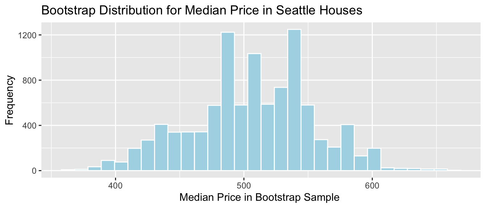
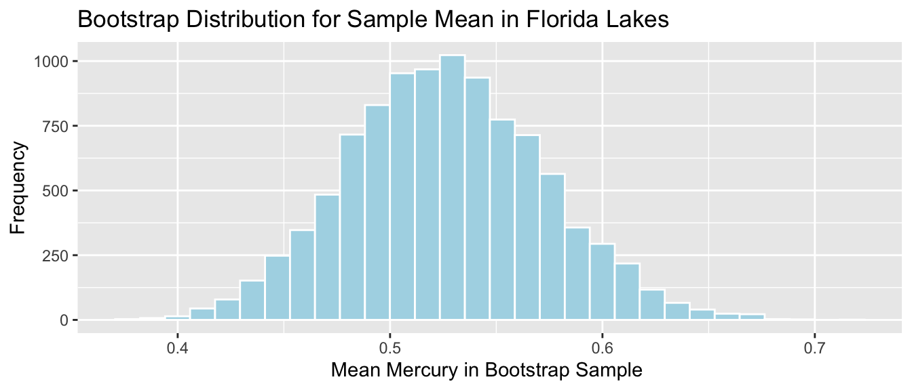

Chapter 4 Bootstrap Confindence Intervals
Learning Outcomes:
- Explain how to obtain a bootstrap distribution for a statistic (such as a sample mean, median, standard deviation, proportion, difference in means or proportions, or regression coefficient).
- Explain the purpose of bootstrapping.
- Interpret confidence intervals, or explain why it is inappropriate to do so.
- Explain whether or not the results of a confidence interval are.
consistent with the conclusion of a hypothesis test. - Define standard error of a statistic and interpret it in context.
- Explain how sample size and level of confidence impact the width of a confidence interval.
- Explain how sample size impacts variability in individual observations, and the sampling distribution for a test statistic.
4.1 Quantifying Sampling Variability
4.1.1 Distribution of Mercury Levels in Florida Lakes
Recall the example of mercury levels in a sample of 53 Florida Lakes, seen in the previous chapter.
Lakes_Hist <- ggplot(data=FloridaLakes, aes(x=AvgMercury)) +
geom_histogram(color="white", fill="lightblue", binwidth = 0.2) +
ggtitle("Mercury Levels in Sample of Florida Lakes") +
xlab("Mercury Level") + ylab("Frequency")
Lakes_Hist
The table shows
- mean mercury level,
- median mercury level,
- standard deviation in mercury level between lakes,
- proportion of lakes with mercury level above 1 ppm
Lakes_Stats <- FloridaLakes %>% summarize(MeanHg = mean(AvgMercury),
MedianHg = median(AvgMercury),
StDevHG = sd(AvgMercury),
PropOver1 = mean(AvgMercury>1),
N=n())
Lakes_Stats## # A tibble: 1 × 5
## MeanHg MedianHg StDevHG PropOver1 N
## <dbl> <dbl> <dbl> <dbl> <int>
## 1 0.527 0.48 0.341 0.113 53If Mercury accumulation exceeds 0.5 ppm, then there are environmental concerns. In fact, the legal safety limit in Canada is 0.5 ppm, although it is 1 ppm in the United States.
Since the mean mercury level is 0.527 ppm, this might be some cause for concern.
Then again, this was based on just a sample of 53 lakes. We would expect mean mercury level to vary from one sample of 53 to the next, so we would not expect the mean of this sample to exactly match the mean mercury level among all Florida lakes.
It would be helpful to know how might the mean mercury level could plausibly vary from one sample of size 53 to the next. We could use this information to determine a reasonable range for the mean mercury level of all Florida lakes.
If we had lots of different samples of 53 lakes, we could calculate the mean of each sample, and then see how much these means differ from each other (i.e. calculate the standard deviation of the means).
Unfortunately, we don’t have lots of samples of size 53, we only have one sample.
4.1.2 Simulation to Quantify Variability
Somehow, we need to use information from just this one sample to estimate how much variability could plausibly occur between the mean of many different samples of 53 lakes.
Idea: Let’s assume our sample is representative of all Florida lakes. Then, we’ll duplicate it many times to create a large set, that will look like the population of all Florida Lakes. We can then draw samples of 53 from that large population, and record the mean mercury level for each sample of 53.

In fact, duplicating the sample many times and selecting new samples of 53 has the same effect as drawing samples of size 53 from the original sample, by putting the lake drawn back in each time. (i.e. sampling with replacement)
This means that in each new sample, some lakes will be drawn multiple times and others not at all. It also ensures that each sample is different, allowing us to estimate variability in the sample mean between the different samples of size 53.

The variability in sample means in our newly drawn samples is used to approximate the variability in sample means that would occur between different samples of 53 lakes, drawn from the population of all Florida Lakes.
4.1.3 Bootstrap Sampling
The approach of sampling from the original sample, described on the previous page is called bootstrap sampling. The new samples drawn are referred to as bootstrap samples.
Take a bootstrap sample of size 53, by sampling lakes with replacement.
Calculate the mean mercury concentration in the bootstrap sample.
Repeat steps 1 and 2 many (say 10,000) times, keeping track of the mean mercury concentrations in each bootstrap sample.
Look at the distribution of mean concentrations from the bootstrap samples. The variability in this distribution can be used to approximate the variability in the sampling distribution for the sample mean.
4.1.4 Original Sample
## Lake AvgMercury
## Alligator 1.23
## Annie 1.33
## Apopka 0.04
## Blue Cypress 0.44
## Brick 1.20
## Bryant 0.27
## Cherry 0.48
## Crescent 0.19
## Deer Point 0.83
## Dias 0.81
## Dorr 0.71
## Down 0.50
## Eaton 0.49
## East Tohopekaliga 1.16
## Farm-13 0.05
## George 0.15
## Griffin 0.19
## Harney 0.77
## Hart 1.08
## Hatchineha 0.98
## Iamonia 0.63
## Istokpoga 0.56
## Jackson 0.41
## Josephine 0.73
## Kingsley 0.34
## Kissimmee 0.59
## Lochloosa 0.34
## Louisa 0.84
## Miccasukee 0.50
## Minneola 0.34
## Monroe 0.28
## Newmans 0.34
## Ocean Pond 0.87
## Ocheese Pond 0.56
## Okeechobee 0.17
## Orange 0.18
## Panasoffkee 0.19
## Parker 0.04
## Placid 0.49
## Puzzle 1.10
## Rodman 0.16
## Rousseau 0.10
## Sampson 0.48
## Shipp 0.21
## Talquin 0.86
## Tarpon 0.52
## Tohopekaliga 0.65
## Trafford 0.27
## Trout 0.94
## Tsala Apopka 0.40
## Weir 0.43
## Wildcat 0.25
## Yale 0.27Sample Mean:
## [1] 0.52716984.1.5 Five Bootstrap Samples in R
The sample_n() function samples the specified number rows from a data frame, with or without replacement.
Bootstrap Sample 1
## Lake AvgMercury
## Annie 1.33
## Apopka 0.04
## Blue Cypress 0.44
## Bryant 0.27
## Deer Point 0.83
## Deer Point 0.83
## Dias 0.81
## Dorr 0.71
## Down 0.50
## Down 0.50
## Down 0.50
## Down 0.50
## Eaton 0.49
## Farm-13 0.05
## George 0.15
## George 0.15
## Harney 0.77
## Harney 0.77
## Hart 1.08
## Hart 1.08
## Hatchineha 0.98
## Hatchineha 0.98
## Istokpoga 0.56
## Istokpoga 0.56
## Istokpoga 0.56
## Josephine 0.73
## Kingsley 0.34
## Kingsley 0.34
## Kissimmee 0.59
## Kissimmee 0.59
## Miccasukee 0.50
## Miccasukee 0.50
## Newmans 0.34
## Newmans 0.34
## Orange 0.18
## Panasoffkee 0.19
## Placid 0.49
## Puzzle 1.10
## Sampson 0.48
## Sampson 0.48
## Talquin 0.86
## Trafford 0.27
## Trout 0.94
## Weir 0.43
## Weir 0.43
## Weir 0.43
## Wildcat 0.25
## Wildcat 0.25
## Yale 0.27
## Yale 0.27
## Yale 0.27
## Yale 0.27
## Yale 0.27Sample Mean:
## [1] 0.525283Bootstrap Sample 2
## Lake AvgMercury
## Alligator 1.23
## Apopka 0.04
## Blue Cypress 0.44
## Blue Cypress 0.44
## Brick 1.20
## Cherry 0.48
## Crescent 0.19
## Crescent 0.19
## Crescent 0.19
## Crescent 0.19
## Dorr 0.71
## Dorr 0.71
## East Tohopekaliga 1.16
## Eaton 0.49
## Farm-13 0.05
## George 0.15
## Harney 0.77
## Harney 0.77
## Hart 1.08
## Hatchineha 0.98
## Hatchineha 0.98
## Istokpoga 0.56
## Jackson 0.41
## Josephine 0.73
## Kingsley 0.34
## Kissimmee 0.59
## Lochloosa 0.34
## Lochloosa 0.34
## Louisa 0.84
## Miccasukee 0.50
## Minneola 0.34
## Monroe 0.28
## Newmans 0.34
## Ocean Pond 0.87
## Okeechobee 0.17
## Orange 0.18
## Panasoffkee 0.19
## Parker 0.04
## Placid 0.49
## Placid 0.49
## Rodman 0.16
## Shipp 0.21
## Shipp 0.21
## Talquin 0.86
## Talquin 0.86
## Tarpon 0.52
## Trafford 0.27
## Trout 0.94
## Tsala Apopka 0.40
## Weir 0.43
## Weir 0.43
## Wildcat 0.25
## Yale 0.27## [1] 0.4960377Bootstrap Sample 3
## Lake AvgMercury
## Brick 1.20
## Brick 1.20
## Bryant 0.27
## Bryant 0.27
## Cherry 0.48
## Crescent 0.19
## Crescent 0.19
## Deer Point 0.83
## Deer Point 0.83
## Dias 0.81
## Dorr 0.71
## Dorr 0.71
## Down 0.50
## Down 0.50
## Farm-13 0.05
## George 0.15
## Griffin 0.19
## Griffin 0.19
## Harney 0.77
## Hart 1.08
## Hart 1.08
## Hatchineha 0.98
## Iamonia 0.63
## Iamonia 0.63
## Istokpoga 0.56
## Istokpoga 0.56
## Istokpoga 0.56
## Jackson 0.41
## Josephine 0.73
## Josephine 0.73
## Kingsley 0.34
## Kingsley 0.34
## Miccasukee 0.50
## Minneola 0.34
## Minneola 0.34
## Newmans 0.34
## Okeechobee 0.17
## Orange 0.18
## Orange 0.18
## Parker 0.04
## Sampson 0.48
## Sampson 0.48
## Shipp 0.21
## Shipp 0.21
## Shipp 0.21
## Talquin 0.86
## Talquin 0.86
## Tarpon 0.52
## Tohopekaliga 0.65
## Tsala Apopka 0.40
## Weir 0.43
## Wildcat 0.25
## Yale 0.27## [1] 0.5016981Bootstrap Sample 4
## Lake AvgMercury
## Annie 1.33
## Blue Cypress 0.44
## Blue Cypress 0.44
## Brick 1.20
## Brick 1.20
## Bryant 0.27
## Dias 0.81
## Dias 0.81
## Dorr 0.71
## Dorr 0.71
## East Tohopekaliga 1.16
## Eaton 0.49
## Farm-13 0.05
## George 0.15
## Harney 0.77
## Harney 0.77
## Hart 1.08
## Hatchineha 0.98
## Jackson 0.41
## Jackson 0.41
## Jackson 0.41
## Jackson 0.41
## Josephine 0.73
## Kingsley 0.34
## Kissimmee 0.59
## Kissimmee 0.59
## Lochloosa 0.34
## Lochloosa 0.34
## Louisa 0.84
## Louisa 0.84
## Louisa 0.84
## Miccasukee 0.50
## Minneola 0.34
## Minneola 0.34
## Monroe 0.28
## Newmans 0.34
## Newmans 0.34
## Ocean Pond 0.87
## Ocheese Pond 0.56
## Okeechobee 0.17
## Okeechobee 0.17
## Parker 0.04
## Parker 0.04
## Rodman 0.16
## Sampson 0.48
## Shipp 0.21
## Talquin 0.86
## Tarpon 0.52
## Tarpon 0.52
## Trout 0.94
## Trout 0.94
## Tsala Apopka 0.40
## Tsala Apopka 0.40## [1] 0.5637736Bootstrap Sample 5
## Lake AvgMercury
## Alligator 1.23
## Alligator 1.23
## Apopka 0.04
## Brick 1.20
## Bryant 0.27
## Cherry 0.48
## Cherry 0.48
## Crescent 0.19
## Crescent 0.19
## Deer Point 0.83
## Deer Point 0.83
## Deer Point 0.83
## Deer Point 0.83
## Dias 0.81
## Dorr 0.71
## Dorr 0.71
## Down 0.50
## East Tohopekaliga 1.16
## Eaton 0.49
## Griffin 0.19
## Iamonia 0.63
## Istokpoga 0.56
## Istokpoga 0.56
## Jackson 0.41
## Jackson 0.41
## Jackson 0.41
## Kingsley 0.34
## Lochloosa 0.34
## Lochloosa 0.34
## Lochloosa 0.34
## Miccasukee 0.50
## Miccasukee 0.50
## Minneola 0.34
## Minneola 0.34
## Monroe 0.28
## Monroe 0.28
## Newmans 0.34
## Orange 0.18
## Orange 0.18
## Panasoffkee 0.19
## Panasoffkee 0.19
## Parker 0.04
## Placid 0.49
## Puzzle 1.10
## Puzzle 1.10
## Rodman 0.16
## Rodman 0.16
## Rousseau 0.10
## Sampson 0.48
## Tohopekaliga 0.65
## Trafford 0.27
## Weir 0.43
## Wildcat 0.25## [1] 0.49226424.1.6 Code for Bootstrap for Sample Mean
Now, we’ll take 10,000 bootstrap samples, and record the mean mercury concentration in each sample.
4.1.7 Bootstrap Distribution for Sample Mean
Lakes_Bootstrap_Mean <- ggplot(data=Lakes_Bootstrap_Results_Mean, aes(x=MeanHg)) +
geom_histogram(color="white", fill="lightblue") +
xlab("Mean Mercury in Bootstrap Sample ") + ylab("Frequency") +
ggtitle("Bootstrap Distribution for Sample Mean in Florida Lakes") +
theme(legend.position = "none")
Lakes_Bootstrap_Mean
We’ll calculate the 0.025 and 0.975 quantiles of this distribution, that is, the values between which the middle 95% of the bootstrap sample means lie.
q.025 <- quantile(Lakes_Bootstrap_Results_Mean$MeanHg, 0.025)
q.975 <- quantile(Lakes_Bootstrap_Results_Mean$MeanHg, 0.975)
c(q.025, q.975)## 2.5% 97.5%
## 0.4379198 0.6179245Lakes_Bootstrap_Mean + geom_segment(aes(x=q.025,xend=q.975, y=50, yend=50), color="gold", size=10, alpha=0.01) + geom_text(label="Middle 95%", x=(q.025 + q.975)/2 , y=50)
We are 95% confident that the mean mercury level is all Florida Lakes is between 0.44 and 0.62 ppm.
4.1.8 Confidence Intervals
We call the above interval a 95% bootstrap percentile confidence interval for the mean mercury level of all Florida Lakes.
A confidence interval provides a reasonable range in which a quantity that pertains to the population could lie, based on data from a sample.
The quantity we are estimating, which pertains to the entire population is called a parameter.
In this case, the parameter of interest is the mean mercury level of all Florida lakes, and the data is our sample of 53 lakes.
When we estimate a population parameter, using a statistic from a sample, we need to provide a confidence interval to account for variability in the statistic from one sample to the next.
4.1.9 What Bootstrapping Does and Doesn’t Do
The purpose of bootstrapping is to quantify the amount of uncertainty associated with a statistic that was calculated from a sample.
A common misperception is that bootstrapping somehow increases the size of a sample by creating copies (or sampling with replacement). This is wrong!!!! Bootstrap samples are obtained by sampling from the original data, so they contain no new information and do not increase sample size. They simply help us understand how much our sample result could reasonably differ from that of the full population.
4.2 Bootstrapping Other Statistics
4.2.1 General Bootstrapping Procedure
The bootstrap procedure can be applied to quantify uncertainty associated with a wide range of statistics (for example, sample proportions, means, medians, standard deviations, regression coefficients, F-statistics, etc.)
Given a statistic that was calculated from a sample…
Procedure:
Take a sample of the same size as the original sample, by sampling cases from the original sample, with replacement.
Calculate the statistic of interest in the bootstrap sample.
Repeat steps 1 and 2 many (say 10,000) times, keeping track of the statistic calculated in each bootstrap sample.
Look at the distribution of statistics calculated from the bootstrap samples. The variability in this distribution can be used to approximate the variability in the sampling distribution for the statistic of interest.
We might be interested in quantities other than mean mercury level for the lakes. For example:
- standard deviation in mercury level
## [1] 0.3410356- percentage of lakes with mercury level exceeding 1 ppm
## [1] 0.1132075Note: in R, taking the mean of a logical variable returns the proportion of this that the condition is TRUE.
- median mercury level
## [1] 0.484.2.2 Bootstrapping for Other Quantities
We can also use bootstrapping to obtain confidence intervals for the median and standard deviation in mercury levels in Florida lakes.
StDevHg <- rep(NA, 10000)
PropOver1 <- rep(NA, 10000)
MedianHg <- rep(NA, 10000)
for (i in 1:10000){
BootstrapSample <- sample_n(FloridaLakes, 53, replace=TRUE)
StDevHg[i] <- sd(BootstrapSample$AvgMercury)
PropOver1[i] <- mean(BootstrapSample$AvgMercury>1)
MedianHg[i] <- median(BootstrapSample$AvgMercury)
}
Lakes_Bootstrap_Results_Other <- data.frame(MedianHg, PropOver1, StDevHg)4.2.3 Lakes Bootstrap Percentile CI for St. Dev.
q.025 <- quantile(Lakes_Bootstrap_Results_Other$StDevHg, 0.025)
q.975 <- quantile(Lakes_Bootstrap_Results_Other$StDevHg, 0.975)
c(q.025, q.975)## 2.5% 97.5%
## 0.2778717 0.3910469Lakes_Bootstrap_SD <- ggplot(data=Lakes_Bootstrap_Results_Other, aes(x=StDevHg)) + geom_histogram(color="white", fill="lightblue") +
xlab("Standard Devation in Bootstrap Sample ") + ylab("Frequency") +
ggtitle("Bootstrap Distribution for Standard Deviation in Florida Lakes")
Lakes_Bootstrap_SD + geom_segment(aes(x=q.025,xend=q.975, y=50, yend=50), color="gold", size=10, alpha=0.01)We are 95% confident that the standard deviation in mercury level for all Florida Lakes is between 0.28 and 0.39 ppm.
4.2.4 Bootstrap Percentile CI for Prop. > 1 ppm
q.025 <- quantile(Lakes_Bootstrap_Results_Other$PropOver1, 0.025)
q.975 <- quantile(Lakes_Bootstrap_Results_Other$PropOver1, 0.975)
c(q.025, q.975)## 2.5% 97.5%
## 0.03773585 0.20754717Lakes_Bootstrap_PropOver1 <- ggplot(data=Lakes_Bootstrap_Results_Other, aes(x=PropOver1)) + geom_histogram(color="white", fill="lightblue") +
xlab("Proportion of Lakes over 1 ppm ") + ylab("Frequency") +
ggtitle("Bootstrap Distribution for Prop. Lakes > 1.0 ppm")
Lakes_Bootstrap_PropOver1 + geom_segment(aes(x=q.025,xend=q.975, y=50, yend=50), color="gold", size=10, alpha=0.01)
We are 95% confident that the proportion of all Florida lakes with mercury level over 1 ppm is between 0.04 and 0.21.
4.2.5 Bootstrap Percentile CI for Median
q.025 <- quantile(Lakes_Bootstrap_Results_Other$MedianHg, 0.025)
q.975 <- quantile(Lakes_Bootstrap_Results_Other$MedianHg, 0.975)Lakes_Bootstrap_Median <- ggplot(data=Lakes_Bootstrap_Results_Other, aes(x=MedianHg)) + geom_histogram(fill="lightblue")+
xlab("Median Mercury in Bootstrap Sample ") + ylab("Frequency") +
ggtitle("Bootstrap Distribution for Sample Median in Florida Lakes")
Lakes_Bootstrap_Median + geom_segment(aes(x=q.025,xend=q.975, y=50, yend=50), color="gold", size=10, alpha=0.01)We should not draw conclusions from this bootstrap distribution. The bootstrap is unreliable when we see the same values coming up repeatedly in clusters, with large gaps in between.
This can be an issue for statistics that are a single value from the dataset (for example median)
4.2.6 When Gaps are/ aren’t OK
- Sometimes,
ggplot()shows gaps in a histogram, due mainly to binwidth. If the points seems to follow a fairly smooth trend (such as for prop > 1), then bootstrapping is ok. If there are large clusters and gaps (such as for median), bootstrapping is inadvisable.
Jitter plots can help us look for clusters and gaps.
V1 <- ggplot(data=Lakes_Bootstrap_Results_Other, aes(y=PropOver1, x=1)) + geom_jitter()
V2 <- ggplot(data=Lakes_Bootstrap_Results_Other, aes(y=MedianHg, x=1)) + geom_jitter()
grid.arrange(V1, V2, ncol=2)
4.2.7 Changing Binwidth in Histogram
Sometimes, default settings in
geom_histogram()lead to less that optimal graphs. ( For example, oddly-placed gaps that do not accurately represent the shape of the data)When a histogram shows undesired gaps, that are not really indivative of large gaps in the data, we can sometimes get rid of them by adjusting the binwidth.
Before you do this, explore the data, such as through jitter plots. Do not change binwidth to intentionally manipulate or hide undesirable information. Your goal should be to find a plot that accurately displays the shape/trend in the data.
4.3 Difference in Sample Means
4.3.1 Mercury Levels in Northern vs Southern Florida Lakes
We previously used a permutation test and determined that there was strong evidence the the average mercury level for lakes in Southern Florida is higher than the average mercury level for lakes in Northern Florida.
library(Lock5Data)
data(FloridaLakes)
#Location relative to rt. 50
FloridaLakes$Location <- as.factor(c("S","S","N","S","S","N","N","N","N","N","N","S","N","S","N","N","N","N","S","S","N","S","N","S","N","S","N","S","N","N","N","N","N","N","S","N","N","S","S","N","N","N","N","S","N","S","S","S","S","N","N","N","N"))
head(FloridaLakes %>% select(Lake, AvgMercury, Location))## # A tibble: 6 × 3
## Lake AvgMercury Location
## <chr> <dbl> <fct>
## 1 Alligator 1.23 S
## 2 Annie 1.33 S
## 3 Apopka 0.04 N
## 4 Blue Cypress 0.44 S
## 5 Brick 1.2 S
## 6 Bryant 0.27 NLakesBP <- ggplot(data=FloridaLakes, aes(x=Location, y=AvgMercury, fill=Location)) +
geom_boxplot() + geom_jitter() + ggtitle("Mercury Levels in Florida Lakes") +
xlab("Location") + ylab("Mercury Level") + theme(axis.text.x = element_text(angle = 90)) + coord_flip()
LakesBP
LakesTable <- FloridaLakes %>% group_by(Location) %>% summarize(MeanHg=mean(AvgMercury),
StDevHg=sd(AvgMercury),
N=n())
LakesTable## # A tibble: 2 × 4
## Location MeanHg StDevHg N
## <fct> <dbl> <dbl> <int>
## 1 N 0.425 0.270 33
## 2 S 0.696 0.384 20In our sample of 33 Northern Lakes and 20 Southern Lakes, we saw a difference of 0.27 ppm. We might want to estimate how big or small this difference could be among all Florida lakes.
4.3.2 Model for Northern and Southern Lakes
\(\widehat{\text{Hg}} = b_0 +b_1\text{I}_{\text{South}}\)
- \(b_0\) represents the mean mercury level for lakes in North Florida, and
- \(b_1\) represents the mean difference in mercury level for lakes in South Florida, compared to North Florida
4.3.3 Model for Lakes R Output
##
## Call:
## lm(formula = AvgMercury ~ Location, data = FloridaLakes)
##
## Residuals:
## Min 1Q Median 3Q Max
## -0.65650 -0.23455 -0.08455 0.24350 0.67545
##
## Coefficients:
## Estimate Std. Error t value Pr(>|t|)
## (Intercept) 0.42455 0.05519 7.692 0.000000000441 ***
## LocationS 0.27195 0.08985 3.027 0.00387 **
## ---
## Signif. codes: 0 '***' 0.001 '**' 0.01 '*' 0.05 '.' 0.1 ' ' 1
##
## Residual standard error: 0.3171 on 51 degrees of freedom
## Multiple R-squared: 0.1523, Adjusted R-squared: 0.1357
## F-statistic: 9.162 on 1 and 51 DF, p-value: 0.0038684.3.4 Bootstrapping for Northern vs Southern Lakes
Bootstrapping Procedure
Take bootstrap samples of 33 northern Lakes, and 20 southern Lakes, by sampling with replacement.
Fit a model and record regression coefficient \(b_1\), which represents the difference in mean mercury levels between the samples.
Repeat steps 1 and 2 10,000 times, keeping track of the regression coefficient estimates in each bootstrap sample.
Look at the distribution of regression coefficients in the bootstrap samples. The variability in this distribution can be used to approximate the variability in the sampling distributions for the \(b_1\).
4.3.5 Code for Bootstrapping for N vs S Lakes
b1 <- rep(NA, 10000) #vector to store b1 values
for (i in 1:10000){
NLakes <- sample_n(FloridaLakes %>% filter(Location=="N"), 33, replace=TRUE) ## sample 33 northern lakes
SLakes <- sample_n(FloridaLakes %>% filter(Location=="S"), 20, replace=TRUE) ## sample 20 southern lakes
BootstrapSample <- rbind(NLakes, SLakes) ## combine Northern and Southern Lakes
M <- lm(data=BootstrapSample, AvgMercury ~ Location) ## fit linear model
b1[i] <- coef(M)[2] ## record b1
}
NS_Lakes_Bootstrap_Results <- data.frame(b1) #save results as dataframe4.3.6 Lakes: Bootstrap Percentile CI for Avg. Diff.
q.025 <- quantile(NS_Lakes_Bootstrap_Results$b1, 0.025)
q.975 <- quantile(NS_Lakes_Bootstrap_Results$b1, 0.975)
c(q.025, q.975)## 2.5% 97.5%
## 0.08475265 0.46174886NS_Lakes_Bootstrap_Plot_b1 <- ggplot(data=NS_Lakes_Bootstrap_Results, aes(x=b1)) +
geom_histogram(color="white", fill="lightblue") +
xlab("b1 in Bootstrap Sample") + ylab("Frequency") +
ggtitle("Northern vs Southern Lakes: Bootstrap Distribution for b1")
NS_Lakes_Bootstrap_Plot_b1 + geom_segment(aes(x=q.025,xend=q.975, y=50, yend=50), color="gold", size=10, alpha=0.01)
We are 95% confident the average mercury level in Southern Lakes is between 0.08 and 0.46 ppm higher than in Northern Florida.
Question: We previously performed a hypothesis test and concluded that there was evidence that mean mercury level was higher for lakes in South Florida than Northern Florida. Is this confidence interval consistent with the result of the hypothesis test? Why or why not?
4.4 Bootstrapping Regression Coefficients
4.4.1 Bootstrapping Regression Slope for All Cars
Since \(b_0\) and \(b_1\) were calculated from a sample of 110 new 2015 cars, we do not expect them to be exactly the same as what we would have obtained if we had data on all 2015 new cars. We’ll use bootstrapping to get a sense for how much variability is associated with the slope and intercept of the regression line.
Bootstrapping Procedure
Take a bootstrap sample of size 110, by sampling cars with replacement.
Fit a linear regression model to the bootstrap sample with price as the response variable, and Acc060 as the explanatory variable. Record \(b_0\) and \(b_1\).
Repeat steps 1 and 2 10,000 times, keeping track of the values on \(b_0\) and \(b_1\) in each bootstrap sample.
Look at the distribution of \(b_0\) and \(b_1\) from the bootstrap samples. The variability in these distributions can be used to approximate the variability in the sampling distribution for the intercept and slope.
4.4.2 Code for Cars Regression Bootstrap
b0 <- rep(NA, 10000)
b1 <- rep(NA, 10000)
for (i in 1:10000){
BootstrapSample <- sample_n(Cars2015, 110, replace=TRUE)
Model_Bootstrap <- lm(data=BootstrapSample, LowPrice~Acc060)
b0[i] <- Model_Bootstrap$coeff[1]
b1[i] <-Model_Bootstrap$coeff[2]
}
Cars_Bootstrap_Results_Acc060 <- data.frame(b0, b1)4.4.4 Bootstrap Percentile CI for Slope of Cars Reg. Line
q.025 <- quantile(Cars_Bootstrap_Results_Acc060$b1, 0.025)
q.975 <- quantile(Cars_Bootstrap_Results_Acc060$b1, 0.975)
c(q.025, q.975)## 2.5% 97.5%
## -8.797594 -5.696359Cars_Acc060_B_Slope_Plot <- ggplot(data=Cars_Bootstrap_Results_Acc060, aes(x=b1)) + geom_histogram(color="white", fill="lightblue") +
xlab("Cars Acc060: Slope in Bootstrap Sample ") + ylab("Frequency") +
ggtitle("Bootstrap Distribution for Slope")
Cars_Acc060_B_Slope_Plot + geom_segment(aes(x=q.025,xend=q.975, y=50, yend=50), color="gold", size=10, alpha=0.01)
We are 95% confident that the average price of a new 2015 car decreases between -8.8 and -5.7 thousand dollars for each additional second it takes to accelerate from 0 to 60 mph.
Question: Why shouldn’t we make a bootstrap confidence interval for \(b_0\), the intercept, in this context?
4.5 Bootstrapping Coefficients in Multiple Regression
4.5.1 Model for Predicting Bear Weights
We previously used a linear regression model to predict the weights of wild bears, using a sample of 97 bears. Recall the model and its interpretations.
ggplot(data=Bears_Subset, aes(x=Age, y=Weight, color=Sex)) +
geom_point() + stat_smooth(method="lm", se=FALSE)
4.5.2 Model for Predicting Bear Weights (cont.)
##
## Call:
## lm(formula = Weight ~ Age * Sex, data = Bears_Subset)
##
## Residuals:
## Min 1Q Median 3Q Max
## -207.583 -38.854 -9.574 23.905 174.802
##
## Coefficients:
## Estimate Std. Error t value Pr(>|t|)
## (Intercept) 70.4322 17.7260 3.973 0.000219 ***
## Age 3.2381 0.3435 9.428 0.000000000000765 ***
## Sex2 -31.9574 35.0314 -0.912 0.365848
## Age:Sex2 -1.0350 0.6237 -1.659 0.103037
## ---
## Signif. codes: 0 '***' 0.001 '**' 0.01 '*' 0.05 '.' 0.1 ' ' 1
##
## Residual standard error: 70.18 on 52 degrees of freedom
## (41 observations deleted due to missingness)
## Multiple R-squared: 0.6846, Adjusted R-squared: 0.6664
## F-statistic: 37.62 on 3 and 52 DF, p-value: 0.00000000000045524.5.3 Model Interpretations in Bears Interaction Model
\(\widehat{\text{Weight}}= 70.43+ 3.24 \times\text{Age}- 31.95\times\text{I}_{Female} -1.04\times\text{Age}\times\text{I}_{Female}\)
This model was fit using a sample of 97 wild bears. If we were to take a different sample, and fit a regression model, we would obtain different values for \(b_0\), \(b_1\), \(b_2\), and \(b_3\), as well as relevant quantities \(b_0-b_2\) and \(b_1-b_3\), due to sampling variability.
Questions of interest: Find a reasonable range for the following quantities:
- the mean monthly weight gain among all male bears
- the mean monthly weight gain among all female bears
- the mean weight among all 24 month old male bears
- the mean weight among all 24 month old female bears
Just as we did for sample means and proportions, we can answer these questions via bootstrapping.
4.5.4 Quantities of Interest
First, we need to find expressions for the quantities we are interested in, in terms of the model coefficients.
\(\widehat{\text{Weight}}= b_0+ b_1 \times\text{Age} - b_2\times\text{I}_{Female} + b_3\times\text{Age}\times\text{I}_{Female}\)
Expected Weight for Female Bears:
\[ \begin{aligned} \widehat{\text{Weight}} & = b_0+ b_1 \times\text{Age}+ b_2 + b_3\times\text{Age} \\ & (b_0 + b_2) + (b_1+b_3)\times\text{Age} \end{aligned} \]
Expected Weight for Male Bears:
\[ \begin{aligned} \widehat{\text{Weight}}= b_0 + b_1 \times\text{Age} \end{aligned} \]
Questions of interest: Find a reasonable range for the following quantities:
- the mean weight gain per month among all male bears (\(b_1\))
- the mean weight gain per month among all female bears (\(b_1 + b_3\))
- the mean weight among all 24 month old male bears (\(b_0 + 24b_1\))
- the mean weight among all 24 month old female bears (\(b_0 + b_2 + 24(b_1+b_3)\))
4.5.5 Bootstrapping for Bears Regression Coefficients
Bootstrapping Procedure
Take a bootstrap sample of size 97, by sampling bears with replacement.
Fit a model and record regression coefficients \(b_0\), \(b_1\), \(b_2\), \(b_3\).
Repeat steps 1 and 2 10,000 times, keeping track of the regression coefficient estimates in each bootstrap sample.
Look at the distribution of regression coefficients in the bootstrap samples. The variability in this distribution can be used to approximate the variability in the sampling distributions for the regression coefficients.
4.5.6 Bootstrap Code for Bears Regression Coefficients
b0 <- rep(NA, 10000)
b1 <- rep(NA, 10000)
b2 <- rep(NA, 10000)
b3 <- rep(NA, 10000)
for (i in 1:10000){
BootstrapSample <- sample_n(Bears_Subset, 97, replace=TRUE) #take bootstrap sample
M <- lm(data=BootstrapSample, Weight ~ Age*Sex) ## fit linear model
b0[i] <- coef(M)[1] ## record b0
b1[i] <- coef(M)[2] ## record b1
b2[i] <- coef(M)[3] ## record b2
b3[i] <- coef(M)[4] ## record b3
}
Bears_Bootstrap_Results <- data.frame(b0, b1, b2, b3)4.5.7 Bootstrap Percentile CI for \(b_1\) in Bears Model
The average weight gain per month for male bears is represented by \(b_1\).
q.025 <- quantile(Bears_Bootstrap_Results$b1, 0.025)
q.975 <- quantile(Bears_Bootstrap_Results$b1, 0.975)
c(q.025, q.975)## 2.5% 97.5%
## 2.365099 5.969894Bears_plot_b1 <- ggplot(data=Bears_Bootstrap_Results, aes(x=b1)) +
geom_histogram(color="white", fill="lightblue") + xlab("b1 in Bootstrap Sample") + ylab("Frequency") +
ggtitle("Bears Weight by Age and Sex: Bootstrap Distribution for b1")
Bears_plot_b1 + geom_segment(aes(x=q.025,xend=q.975, y=50, yend=50), color="gold", size=10, alpha=0.01)
We are 95% confident that male bears gain between 2.37 and 5.97 pounds per month, on average.
4.5.8 Bootstrap Percentile CI for \(b_1 + b_3\)
The average weight gain per month for female bears is represented by \(b_1 + b3\).
q.025 <- quantile(Bears_Bootstrap_Results$b1 + Bears_Bootstrap_Results$b3, 0.025)
q.975 <- quantile(Bears_Bootstrap_Results$b1 + Bears_Bootstrap_Results$b3, 0.975)
c(q.025, q.975)## 2.5% 97.5%
## 1.380019 3.443457ggplot(data=Bears_Bootstrap_Results, aes(x=b1+b3, fill=!(b1+b3 >=q.975 | b1 + b3 <= q.025))) + geom_histogram(color="white", fill="lightblue") +
xlab("b1 + b3 in Bootstrap Sample") + ylab("Frequency") +
ggtitle("Bears Weight by Age and Sex:Bootstrap Distribution for b1+b3") + geom_segment(aes(x=q.025,xend=q.975, y=50, yend=50), color="gold", size=10, alpha=0.01)
We are 95% confident that female bears gain between 1.3800186 and 3.4434571 pounds per month, on average.
4.5.9 Bootstrap Percentile CI for \(b_0 + 24b_1\)
The mean weight of all 24 month old male bears is represented by \(b_0 + 24b_1\).
q.025 <- quantile(Bears_Bootstrap_Results$b0 + 24*Bears_Bootstrap_Results$b1, 0.025)
q.975 <- quantile(Bears_Bootstrap_Results$b0 + 24*Bears_Bootstrap_Results$b1, 0.975)
c(q.025, q.975)## 2.5% 97.5%
## 128.5003 169.0521ggplot(data=Bears_Bootstrap_Results, aes(x=b0+24*b1)) +
geom_histogram(color="white", fill="lightblue") +
xlab("b0 + 24b1 in Bootstrap Sample") +
ylab("Frequency") +
ggtitle("Bears Weight by Age and Sex: Bootstrap Distribution for b0+24b1") + geom_segment(aes(x=q.025,xend=q.975, y=50, yend=50), color="gold", size=10, alpha=0.01)We are 95% confident that the mean weight of all 24 month old bears is between 128.5002676 and 169.0521237 pounds.
4.5.10 Bootstrap Percentile CI for \((b_0 + b_2) + 24(b_1+b_3)\)
The mean weight of all 24 month old female bears is represented by \((b_0 + b_2) + 24(b_1+b_3)\).
q.025 <- quantile(Bears_Bootstrap_Results$b0 + Bears_Bootstrap_Results$b2 +
24*(Bears_Bootstrap_Results$b1 + Bears_Bootstrap_Results$b3), 0.025)
q.975 <- quantile(Bears_Bootstrap_Results$b0 + Bears_Bootstrap_Results$b2 +
24*(Bears_Bootstrap_Results$b1 + Bears_Bootstrap_Results$b3), 0.975)
c(q.025, q.975)## 2.5% 97.5%
## 76.2520 112.5801ggplot(data=Bears_Bootstrap_Results, aes(x=(b0+b2)+24*(b1+b3))) +
geom_histogram(color="white", fill="lightblue") +
xlab("(b0+b2)+24*(b1+b3) in Bootstrap Sample") +
ylab("Frequency") +
ggtitle("Bears Weight by Age and Sex: Bootstrap Distribution for (b0+b2)+24*(b1+b3)") + geom_segment(aes(x=q.025,xend=q.975, y=50, yend=50), color="gold", size=10, alpha=0.01)
We are 95% confident that the mean weight of all 24 month old female bears is between 76.2519955 and 112.5800513 pounds.
4.6 Bootstrap Standard Error Confidence Intervals
4.6.1 Shape of Bootstrap Distributions
Notice that most of the bootstrap distributions we’ve seen have been symmetric and bell-shaped.
When a distribution is symmetric and bell-shaped, then approximately 95% of all observations lie within two standard deviations of the mean.
The standard deviation in a distribution of a statistic(i.e. mean, proportion, median, regression coefficient, etc.) is called the standard error of that statistic.
95% bootstrap standard error confidence interval:
\[ \text{Statistic} \pm 2\times\text{Standard Error} \]
it is only appropriate to use the bootstrap standard error confidence interval method when a sampling distribution is symmetric and bell-shaped
The \(\pm\) \(2\times\text{SE}\) is called a margin of error, and the resulting range of plausible values for the parameter is called a 95% bootstrap stanadard error confidence interval.
4.6.2 Comparing SE and Percential Bootstrap Intervals
Let’s compare calculate bootstrap standard error confidence intervals and compare them with some the bootstrap percentile confidence intervals that we’ve seen previously.
4.6.3 Mean Hg in Lakes

## [1] 0.04636432Bootstrap Standard Error Confidence Interval
## [1] 0.4344412 0.6198985Bootstrap Percentile Confidence Interval
q.025 <- quantile(Lakes_Bootstrap_Results_Mean$MeanHg, 0.025)
q.975 <- quantile(Lakes_Bootstrap_Results_Mean$MeanHg, 0.975)
c(q.025, q.975)## 2.5% 97.5%
## 0.4379198 0.6179245Lakes_Bootstrap_Mean + geom_segment(aes(x=q.025,xend=q.975, y=50, yend=50), color="gold", size=10, alpha=0.01) + geom_segment(aes(x = Stat-2*SE, y = 150, xend = Stat+2*SE,
yend = 150),color = "darkgray",size=10, alpha=0.01)Percentile interval in gold, standard error interval in gray
4.6.4 Difference in Mean Hg in Lakes

## [1] 0.09559846Bootstrap Standard Error Confidence Interval
## [1] 0.08126845 0.46366231Bootstrap Percentile Confidence Interval
q.025 <- quantile(NS_Lakes_Bootstrap_Results$b1, 0.025)
q.975 <- quantile(NS_Lakes_Bootstrap_Results$b1, 0.975)
c(q.025, q.975)## 2.5% 97.5%
## 0.08475265 0.46174886NS_Lakes_Bootstrap_Plot_b1 + geom_segment(aes(x=q.025,xend=q.975, y=50, yend=50), color="gold", size=10, alpha=0.01) + geom_segment(aes(x = Stat-2*SE, y = 150, xend = Stat+2*SE,
yend = 150),color = "darkgray",size=10, alpha=0.01)
Percentile interval in gold, standard error interval in gray
4.6.5 Proportion Lakes Exceeding 1 ppm Hg

## [1] 0.04360363Bootstrap Standard Error Confidence Interval
## [1] 0.02586822 0.20028273Bootstrap Percentile Confidence Interval
q.025 <- quantile(Lakes_Bootstrap_Results_Other$PropOver1, 0.025)
q.975 <- quantile(Lakes_Bootstrap_Results_Other$PropOver1, 0.975)
c(q.025, q.975)## 2.5% 97.5%
## 0.03773585 0.20754717 Lakes_Bootstrap_PropOver1 + geom_segment(aes(x=q.025,xend=q.975, y=50, yend=50), color="gold", size=10, alpha=0.01) + geom_segment(aes(x = Stat-2*SE, y = 150, xend = Stat+2*SE,
yend = 150),color = "darkgray",size=10, alpha=0.01)
Percentile interval in gold, standard error interval in gray.
4.6.6 Cars Regression Slope

## [1] 0.7873212Bootstrap Standard Error Confidence Interval
## [1] -8.787625 -5.638340Bootstrap Percentile Confidence Interval
q.025 <- quantile(Cars_Bootstrap_Results_Acc060$b1, 0.025)
q.975 <- quantile(Cars_Bootstrap_Results_Acc060$b1, 0.975)
c(q.025, q.975)## 2.5% 97.5%
## -8.797594 -5.696359Cars_Acc060_B_Slope_Plot + geom_segment(aes(x=q.025,xend=q.975, y=50, yend=50), color="gold", size=10) + geom_segment(aes(x = Stat-2*SE, y = 100, xend = Stat+2*SE,
yend = 100),color = "gray",size=10)
Percentile interval in gold, standard error interval in gray
4.6.7 Bears \(b1\) Coefficient

Bootstrap Standard Error Confidence Interval
## [1] 1.01682## [1] 1.581729 5.649011Bootstrap Percentile Confidence Interval
q.025 <- quantile(Bears_Bootstrap_Results$b1, 0.025)
q.975 <- quantile(Bears_Bootstrap_Results$b1, 0.975)
c(q.025, q.975)## 2.5% 97.5%
## 2.365099 5.969894Bears_plot_b1 +xlim(c(1.5,6.5)) + geom_segment(aes(x=q.025,xend=q.975, y=50, yend=50), color="gold", size=10, alpha=0.01) + geom_segment(aes(x = Stat-2*SE, y = 150, xend = Stat+2*SE,
yend = 150),color = "gray",size=10, alpha=0.01)
Percentile interval in gold, standard error interval in gray
4.7 Standard Error Formulas
4.7.1 What is Standard Error?
Standard error is the standard deviation of the distribution of a statistic (sample mean, proportion, regression coefficient, etc.). It describes the amount of variability in this statistic between samples of a given size.
This is different than the sample standard deviation, which pertains to the amount of variability between individuals in the sample.
Distribution of Mercury Levels in Florida Lakes:
Standard Deviation of Mercury Levels Between Lakes:
## [1] 0.3410356The standard deviation in mercury levels between individual lakes is 0.341 ppm.
This describes how much variability there is in mercury levels between individual lakes.
Bootstrap Distribution for Mean Mercury Level (\(n=53\))

Standard Error for Mean:
## [1] 0.04636432The standard deviation in the distribution for mean mercury levels between different samples of 53 lakes is approximately 0.0463643 ppm.
This describes how much variability there is in mean mercury levels between different samples of 53 lakes.
Question:
- Suppose the sample consisted of 100 lakes, instead of 53, and that the distribution of the new lakes in the sample was similar to that of the original 53. Would you expect the mercury level of individual lakes to increase, decrese, or stay about the same? What about the standard error of the mean mercury level?
4.7.2 Why Did We Use Simulation?
We’ve used simulation (permutation tests and bootstrapping) to do two different things.
- To approximate the distribution of a statistic under the assumption that the null hypothesis is true.
- To determine how much a sample statistic might vary from one sample to the next.
In some common situations, it is possible to use mathematical theory to calculate standard errors, without relying on simulation.
4.7.3 Theory-Based Standard Error Formulas
Recall that standard error tells us about the variability in the distribution of a statistic between different samples size \(n\).
In special cases, there are mathematical formulas for standard errors associated regression coefficients.
| Scenario | Standard Error |
|---|---|
| One Sample Mean | \(SE(\bar{x})=\frac{s}{\sqrt{n}}\) |
| Difference in Sample Means | \(SE(\bar{x}_1-\bar{x}_2)=s\sqrt{\frac{1}{n_1}+\frac{1}{n_2}}\) |
| Intercept in Simple Linear Regression | \(SE(b_0)=s\sqrt{\frac{1}{n}+\frac{\bar{x}^2}{\sum(x_i-\bar{x})^2}}\) |
| Slope in Simple Linear Regression | \(SE(b_1)=\sqrt{\frac{s^2}{\sum(x_i-\bar{x})^2}}\) |
\(s=\sqrt{\frac{\displaystyle\sum_{i=1}^n(y_i-\hat{y}_i)^2}{(n-(p+1))}}\), (p is number of regression coefficients not including \(b_0\)) is sample standard deviation
In the 2nd formula, the standard error estimate \(s\sqrt{\frac{1}{n_1+n_2}}\) is called a “pooled†estimate since it combines information from all groups. When there is reason to believe standard deviation differs between groups, we often use an “unpooled†standard error estimate of \(\sqrt{\frac{s_1^2}{n_1}+\frac{s_2^2}{n_2}}\), where \(s_1, s_2\) represents the standard deviation for groups 1 and 2.
4.7.4 One-Sample Mean Example
Standard Error of the mean, for sample of 53 lakes.
\(SE(\bar{x})=\frac{s}{\sqrt{n}}\)
## [1] 0.04684485##
## Call:
## lm(formula = AvgMercury ~ 1, data = FloridaLakes)
##
## Residuals:
## Min 1Q Median 3Q Max
## -0.48717 -0.25717 -0.04717 0.24283 0.80283
##
## Coefficients:
## Estimate Std. Error t value Pr(>|t|)
## (Intercept) 0.52717 0.04684 11.25 0.00000000000000151 ***
## ---
## Signif. codes: 0 '***' 0.001 '**' 0.01 '*' 0.05 '.' 0.1 ' ' 1
##
## Residual standard error: 0.341 on 52 degrees of freedomComparison to Bootstrap:

Standard Error for Mean:
## [1] 0.046364324.7.5 Standard Error for Difference in Means (cont.)
Standard Error for difference of means between 33 lakes in North Florida, and 20 lakes in South Florida
\[ SE(\bar{x}_1-\bar{x}_2)=s\sqrt{\frac{1}{n_1}+\frac{1}{n_2}}, \]
## [1] 0.08984774##
## Call:
## lm(formula = AvgMercury ~ Location, data = FloridaLakes)
##
## Residuals:
## Min 1Q Median 3Q Max
## -0.65650 -0.23455 -0.08455 0.24350 0.67545
##
## Coefficients:
## Estimate Std. Error t value Pr(>|t|)
## (Intercept) 0.42455 0.05519 7.692 0.000000000441 ***
## LocationS 0.27195 0.08985 3.027 0.00387 **
## ---
## Signif. codes: 0 '***' 0.001 '**' 0.01 '*' 0.05 '.' 0.1 ' ' 1
##
## Residual standard error: 0.3171 on 51 degrees of freedom
## Multiple R-squared: 0.1523, Adjusted R-squared: 0.1357
## F-statistic: 9.162 on 1 and 51 DF, p-value: 0.003868Comparison to Bootstrap:
NS_Lakes_Bootstrap_Plot_b1 <- ggplot(data=NS_Lakes_Bootstrap_Results, aes(x=b1)) +
geom_histogram(color="white", fill="lightblue") +
xlab("b1 in Bootstrap Sample") + ylab("Frequency") +
ggtitle("Northern vs Southern Lakes: Bootstrap Distribution for b1")
NS_Lakes_Bootstrap_Plot_b1 
## [1] 0.095598464.7.6 Standard Error for Slope and Intercept in SLR
Standard Errors pertaining to the variability in slope and intercept of regression line relating price and acceleration time in samples of 110 cars.
Standard Error for Intercept of Regression Line:
\[ SE(b_0)=s\sqrt{\frac{1}{n}+\frac{\bar{x}^2}{\sum(x_i-\bar{x})^2}} \]
Standard Error for Slope of Regression Line:
\[ SE(b_1)=\sqrt{\frac{s^2}{\sum(x_i-\bar{x})^2}} \]
SE for Intercept
## [1] 5.052325SE for Slope:
## [1] 0.6234005##
## Call:
## lm(formula = LowPrice ~ Acc060, data = Cars2015)
##
## Residuals:
## Min 1Q Median 3Q Max
## -29.512 -6.544 -1.265 4.759 27.195
##
## Coefficients:
## Estimate Std. Error t value Pr(>|t|)
## (Intercept) 89.9036 5.0523 17.79 <0.0000000000000002 ***
## Acc060 -7.1933 0.6234 -11.54 <0.0000000000000002 ***
## ---
## Signif. codes: 0 '***' 0.001 '**' 0.01 '*' 0.05 '.' 0.1 ' ' 1
##
## Residual standard error: 10.71 on 108 degrees of freedom
## Multiple R-squared: 0.5521, Adjusted R-squared: 0.548
## F-statistic: 133.1 on 1 and 108 DF, p-value: < 0.000000000000000224.7.7 \(\text{SE}(b_j)\) in MLR
When there is more than one explanatory variable, estimates of regression coefficients and their standard errors become more complicated, and involves inversion of a “design matrix.”
This link provides additional information on the topic. Understanding it will likely require experience with linear algebra (i.e MATH 250).
Estimation in MLR goes beyond the scope of this class. For MLR in this class, you may use the estimates and standard errors reported in the R output, without being expected to calculate them yourself.
4.7.8 R Output for SE’s in MLR
##
## Call:
## lm(formula = Weight ~ Age * Sex, data = Bears_Subset)
##
## Residuals:
## Min 1Q Median 3Q Max
## -207.583 -38.854 -9.574 23.905 174.802
##
## Coefficients:
## Estimate Std. Error t value Pr(>|t|)
## (Intercept) 70.4322 17.7260 3.973 0.000219 ***
## Age 3.2381 0.3435 9.428 0.000000000000765 ***
## Sex2 -31.9574 35.0314 -0.912 0.365848
## Age:Sex2 -1.0350 0.6237 -1.659 0.103037
## ---
## Signif. codes: 0 '***' 0.001 '**' 0.01 '*' 0.05 '.' 0.1 ' ' 1
##
## Residual standard error: 70.18 on 52 degrees of freedom
## (41 observations deleted due to missingness)
## Multiple R-squared: 0.6846, Adjusted R-squared: 0.6664
## F-statistic: 37.62 on 3 and 52 DF, p-value: 0.00000000000045524.7.9 Theory-Based Confidence Intervals
If the sampling distribution for a statistic is symmetric and bell-shaped, we can obtain an approximate 95% confidence interval using the formula:
\[ \text{Statistic} \pm 2\times{\text{Standard Error}}, \]
where the standard error is calculated by formula, rather than via bootstrap simulations.
4.7.10 Comparison of CI Methods
We’ve now seen 3 different ways to obtain confidence intervals based on statistics, calculated from data.
The table below tells us what must be true of the sampling distribution for a statistic in order to use each technique.
| Technique | No Gaps | Bell-Shaped | Known Formula for SE |
|---|---|---|---|
| Bootstrap Percentile | x | ||
| Bootstrap Standard Error | x | x | |
| Theory-Based | x | x | x |
4.7.11 When to use Each CI Method
Example 1
Mean mercury level for all Florida lakes:

It is appropriate to use any of the 3 CI methods since
- sampling distribution is symmetric and bell-shaped with no gaps
- there is a known formula to calculate standard error for a sample mean
The methods should all produce similar results.
Example 2
Slope of regression line in cars example

It is appropriate to use any of the 3 CI methods since
- sampling distribution is symmetric and bell-shaped with no gaps
- there is a known formula to calculate standard error for a slope of regression line
The methods should all produce similar results.
Example 3
Standard deviation of mercury level in Florida Lakes

- It is appropriate to use the bootstrap percentile, and bootstrap standard error CI’s since the sampling distribution is symmetric and bell-shaped.
- We cannot use the theory-based interval because we do not have a formula to calculate the standard error, associated with an estimate of \(\sigma\).
Example 4
Regression slope in bears age model

- It is appropriate to use the bootstrap percentile CI, since the sampling distribution has no gaps.
- Since the distribution is not symmetric, it would be inappropriate to use the bootstrap standard error, or theory-based confidence interval (Although R does calculate a SE, using it to produce a CI would be unreliable).
Example 5
Median mercury level in Florida Lakes

- Since the distribution has gaps, and is not symmetric, none of these procedures are appropriate.
- In some cases (usually with larger sample size), a bootstrap distribution for the median will not have these gaps. In these situations, the percentile bootstrap interval would be appropriate. If the distribution is bell-shaped, the standard error method would also be appropriate. We would not be able to use the theory-based approach, because there is no formula for the standard error associated with a sample median.